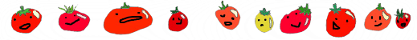

Nix v. Hedden
The Tomato Case.



Another Tomato Fact!
The tomato is eaten in many different ways, raw like a fruit, as an ingredient in many dishes, sauces, salsas, salads, processed into ketchup or tomato soup. Tomato juice is made as a drink and used in cocktails like a Bloody Mary.
The tomato is considered a vegetable in mainly trade and culinary purposes. They are commonly used in main dishes or food with meat/fish. Most people also refer to them as vegetables and commonly seen along side other vegetables in grocery stores.
Many still agrue about whether or not a tomato is a fruit or vegetable. Even though it is botanically classified as fruits, in trade and commerce, a tomato is classfied as a vegetable.